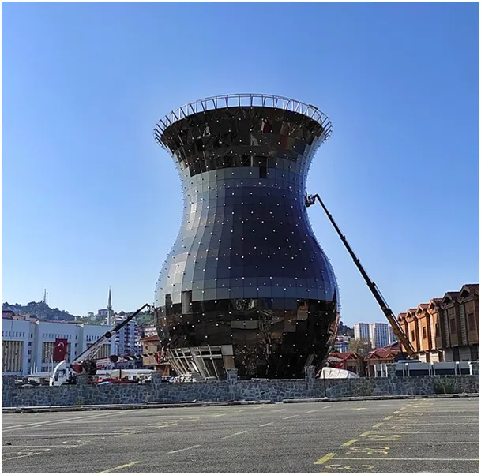
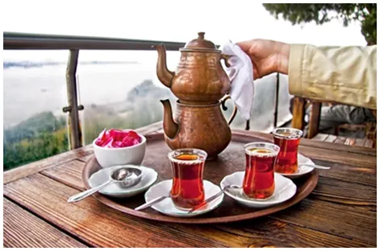
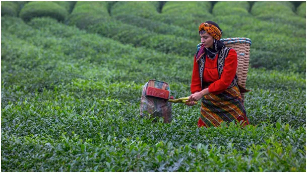

Jak oszczędzać organizm i drogą energię. Termodynamiczne podstawy picia tureckiej herbaty.
Herbata turecka uprawiana jest w północnej części Turcji, w prowincji Rize, wzdłuż brzegów Morza Czarnego, gdzie panuje łagodny i wilgotny klimat. Uprawa w tym rejonie jest to nowa tradycja, ale bardzo mocno wrosła w turecką kulturę, co widać po gigantycznej szklance stojącej w jednym z tureckich miast.

Herbata jest bardzo zdrowym napojem. Potrafi oczyszczać organizm, zawiera witaminy i rzadkie minerały i w chłodnie dni wspaniale rozgrzewa. Turcy piją dziennie kilkanaście szklaneczek, w upalne dni też doskonale reguluje termikę organizmu i pocenie.

Zachód w pogodni za "wygodą" oferuje herbaty, które "się parzą" już w temperaturze cieplej wody z kranu, to jest jakaś chemiczna sztuczka, bo herbatę trzeba naprawdę porządnie sparzyć. W tym celu, wypłukaną w sitku z kwiatowego, gorzkiego pyłku porcję mokrej herbaty wrzuca się do górnego czajniczka. W dolnym czajniku gotujemy czystą wodę. Para podgrzewa górny czajnik i mokra herbata przylegając do metalu zaczyna już puszczać swoje aromaty nie będąc jeszcze zalana wrzątkiem. Gdy woda już wrze w dolnym czajniku a cały zestaw jest bardzo gorący wlewamy trochę wrzątku z dolnego do górnego czajniczka. Do dolnego dolewamy zimnej wody, aby znów był pełen. Gdy po kilku minutach woda znów wrze możemy zmniejszyć ogień i poczekać kilka minut, aby esencja w czajniku górnym "doszła".
Mamy teraz dwa pełne czajniki: dolny z przegotowaną woda i górny z esencją. Mieszając już w szklance w dowolnej proporcji obie części otrzymujemy herbatę słabszą lub mocniejszą, według własnego gustu.
Taki napar doskonale rozgrzewa, kształt szklaneczki nazywanej tulipanem też nie jest przypadkowy. Latem, gdy jest gorąco trzymamy szklankę za brzegi, zimą kulistą podstawę takiego "tulipana" obejmujmy całą dłonią rozgrzewając szybko dłonie. Szczególnie to miłe, gdy zmarznięci dostajemy taki poczęstunek.

Turecka herbata w Polsce jest 2-3 razy tańsza niż podobne herbaty chińskie i znacznie tańsza niż herbaty "angielskie". Proces parzenia jest gwarancją jej smaku i zdrowotnych właściwości, dlatego warto zainwestować w "czajdanlik", czyli taki podwójny czajnik.
Niesłodzona herbata prawie nie ma kalorii, dlatego picie jej rozgrzeje nas a nie powoduje tycia. Jest to szczególnie ważne w jesiennym okresie, gdy chłód powoduje, że podświadomie najadamy się ponad miarę, aby odłożyć zapasy tłuszczu na zimę. Może w tym sezonie grzewczym to ma sens, ale zdrowe nie jest.
I tak to turecka herbata może okazać się kolejnym rządowym programem zamiast węgla na zimę.
Paweł Klimczewski